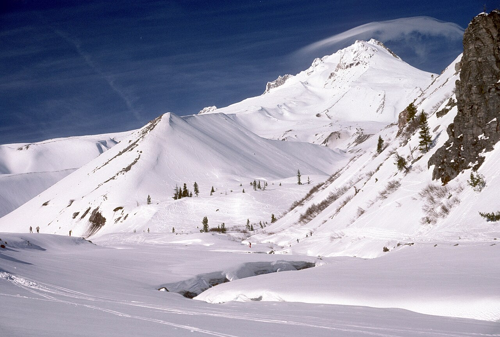
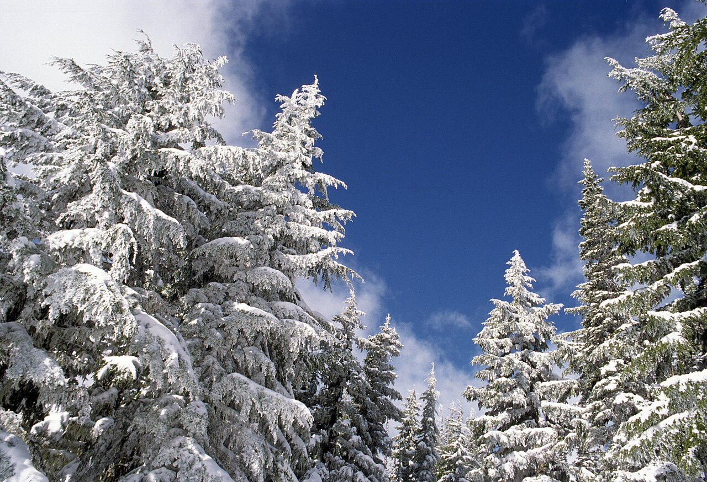
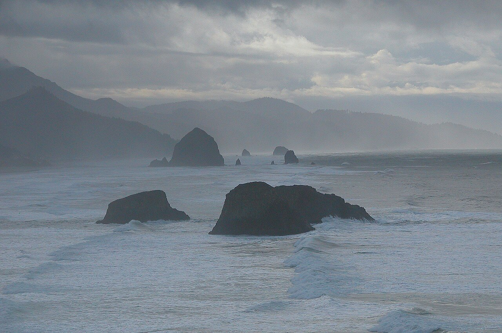
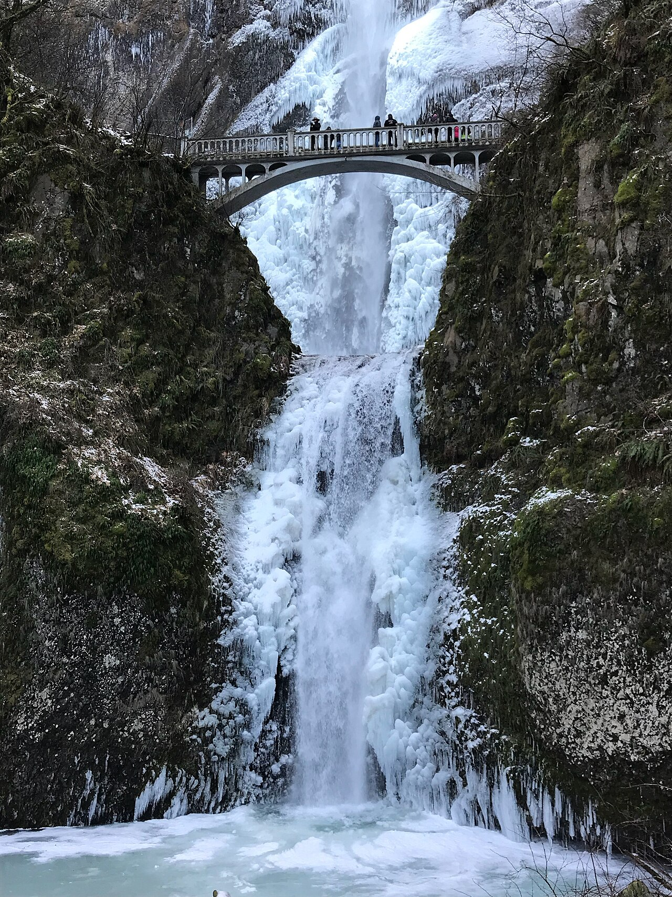
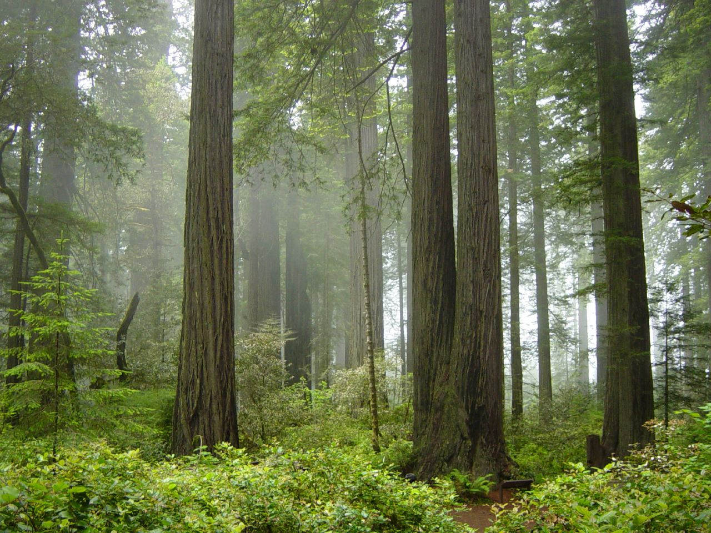

Mount Hood
高海拔赏雪机会高，但冰雪路面和牵引设备要求也最可能影响行程。
雪 / 冰 / 低温从旧金山出发，沿着山脉、海岸与红杉林，走完一条刚好适合圣诞假期的冬季公路旅行。
这趟路线横跨内陆山口、海岸与红杉林。12 月底的 Mount Hood 很可能有积雪；Cannon Beach 更常遇到雨、风和大浪；红杉林则以潮湿、阴凉为主。目前无法预测圣诞当周哪一天会下雪。
2026 年 10 月 NOAA 已发布 El Niño（厄尔尼诺）警报，并认为冬季可能持续偏强。它会改变全美季节性温度和降水的概率，但不能推断某个景点在某一天的雪况。这里的天气描述是季节特征与风险判断，不是逐日预报。NOAA ENSO 公报 ↗
高海拔赏雪机会高，但冰雪路面和牵引设备要求也最可能影响行程。
雪 / 冰 / 低温海边下雪少见。风雨、短暂放晴与高浪更值得提前准备。
雨 / 风 / 高浪林中通常湿冷，风暴后可能有倒木、积水或临时道路封闭。
潮湿 / 阴凉 / 雨NOAA 的冬季展望覆盖 12 月至次年 2 月，不能当作 12 月 25–31 日的具体预报。出发前 7–10 天看 NWS；每天出发前再看 Oregon TripCheck 与 California QuickMap。
按截图中的先后顺序列出原计划，以 Day 1–10 表示，不绑定具体日期；下方七日行程是另一个调整方案。
| 天数 | 行程 | 推荐住宿 |
|---|
每站第一张为该地或附近的冬季照片，可左右切换查看其他实景。照片摄于往年，不代表出发时的天气或活动现场；Redding 和 Silverton 的周边取景已在图片上注明。推荐程度按下方七日冬季方案评估，停留时间也按该方案估算。
保留原计划的核心体验，并把火山口湖作为单独的备选方案。推荐程度按这次「冬季、七天、31 日返程」评估。

这趟旅行的冬日核心。优先考虑 Government Camp 或沿 US‑26 交通方便、冬季可抵达的住处；把一整天留给雪景、轻量活动与木屋休息。
以下照片拍摄于往年，仅呈现冬季可能遇见的景象，不代表 2026 年圣诞周的实际天气。





图片在页面中按容器裁切显示；CC BY-SA 图片原始文件与许可信息可通过各自的来源链接查看。Mount Hood 主图：美国林务局，公共领域 ↗
地图标出原计划景点与 Crater Lake。橙色为推荐行程，灰色为这版跳过的城市与景点。路线连线只用于说明先后顺序；实际导航请打开下方分段链接。
这条七日闭环仍然紧凑，12 月 26 日、30 日和 31 日的基础车程分别约 7.8、8.6 和 8.3 小时，休息与游览另计。为了保住 Mount Hood 两晚、Cannon Beach 一晚与红杉林，必须放弃 Newport、Florence 的从容游玩，只选一个短暂停靠点。若不愿意在 30 日长开车，建议延长到 1 月 1 日返回。
Newport 或 Florence 可在 30 日二选一短停，不能把两处都当成完整景点日。Ashland、Eureka 仍可作为补给或休息点。
Crater Lake 冬季只能从西／南侧经 OR‑62 进入。北入口及 Rim Drive 通常从 11 月 1 日起对汽车关闭；通往 Rim Village 的道路虽会清雪，也可能在暴雪期间关闭数天。即使顺利抵达，云雾仍可能挡住湖面。
查看 NPS 冬季交通说明 ↗至少放弃 Multnomah Falls 与 Silverton Market 中的一项；更稳妥是再减少一段海岸或红杉林停留。
从 I‑5 绕至湖区并原路回到西侧走廊，规划上至少多半天至一天；暴雪时可能完全无法成行。
需把住宿改到 Medford／Klamath Falls 一带，并预留改路空间。七日版不适合把它设为必到点。
若 25 日不能在 15:00 前从 SF 开车，首晚改住 Sacramento／Chico，不勉强夜间赶到 Redding。
租车合同是否允许防滑链、实际轮胎型号与州交通部门牵引要求，都要先确认。SUV 本身不等于免装链。
人数、是否带狗、Mount Hood 木屋雪季车道清理、停车位和取消规则，会影响最终预订。
复核 Siskiyou Pass、US‑26／OR‑35、海岸 US‑101，以及公园步道和瀑布周边的临时封闭。